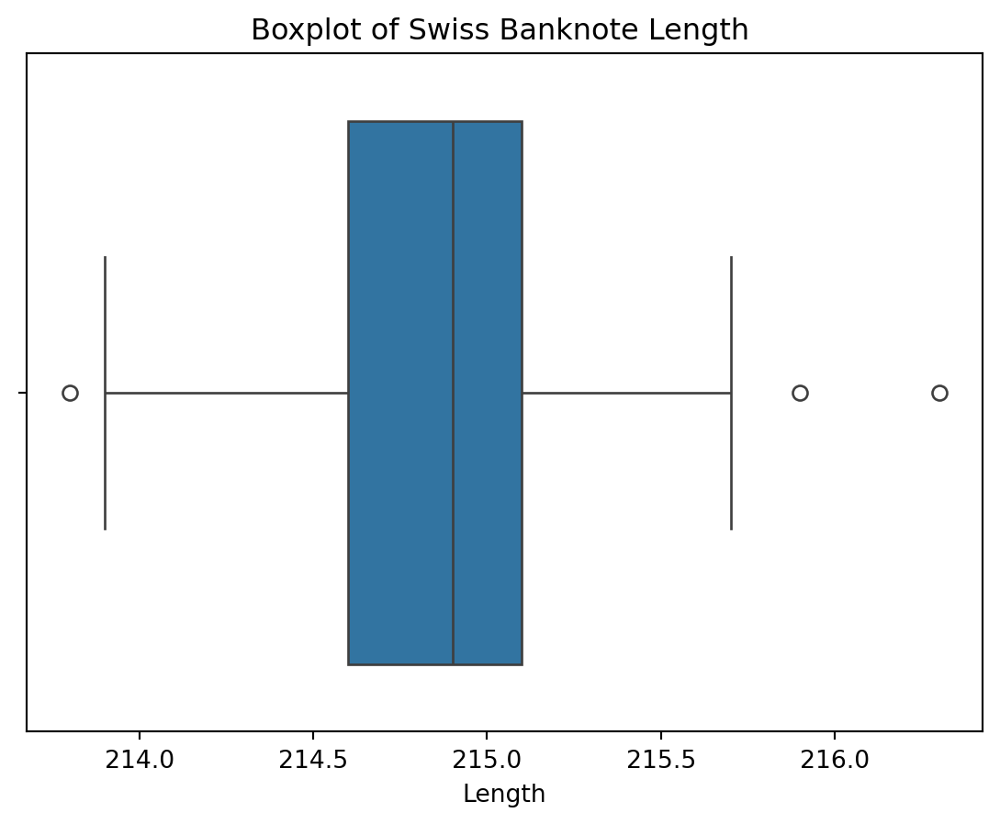
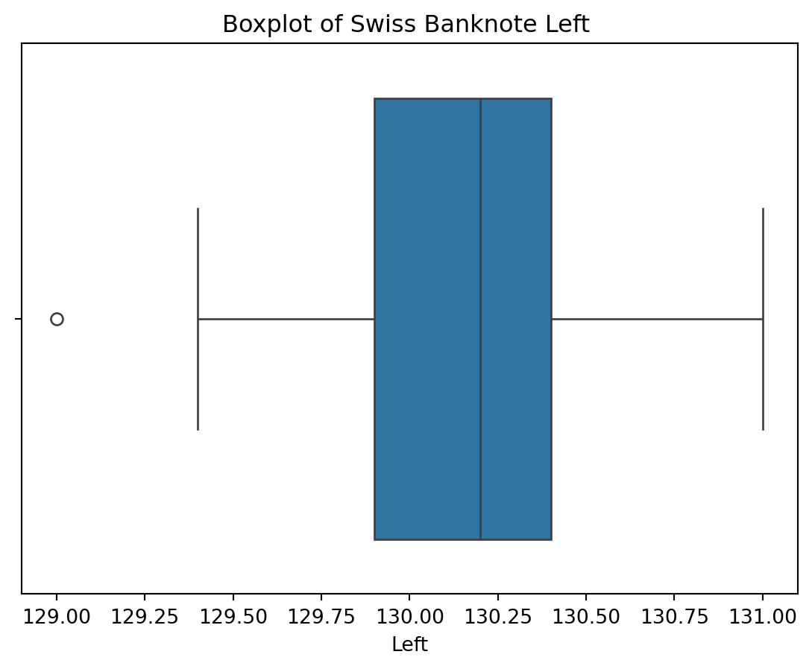
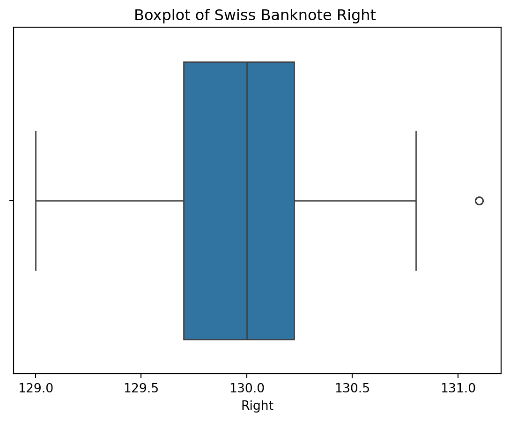
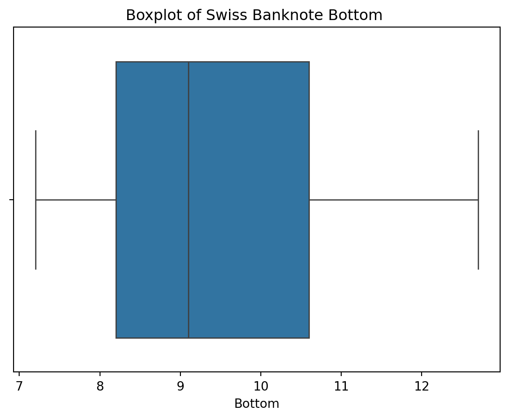
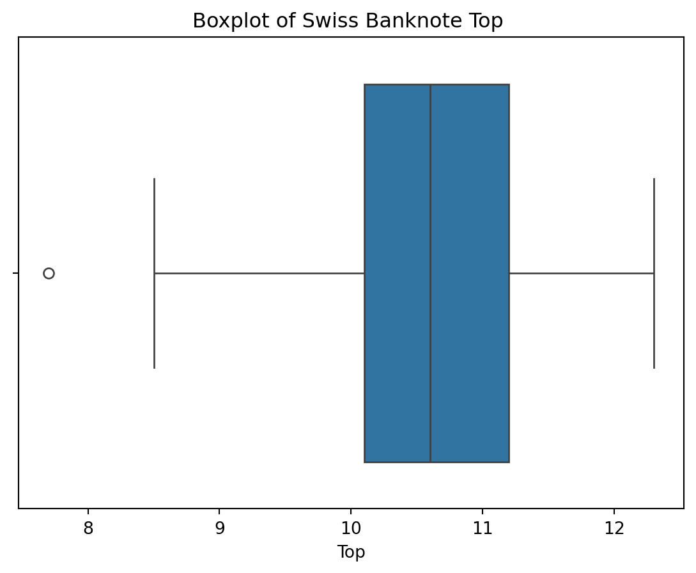
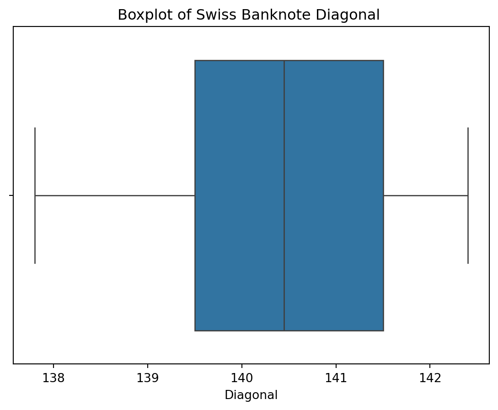

Code
import matplotlib.pyplot as plt
import seaborn as sns
import pandas as pd
from sklearn.model_selection import train_test_split
from sklearn.ensemble import IsolationForest
from sklearn.metrics import precision_score
import numpy as npEllie Woodward
November 30, 2023
Detecting and predicting outliers in machine learning is similar to finding the needles in a haystack; it’s about identifying data points that deviate from the norm. This process holds value as it helps ensure model accuracy and enhance overall performance. By spotting outliers, machine learning algorithms can avoid being disproportionately influenced by extreme data, thereby preventing skewed predictions or biased results. Removing outliers or treating them appropriately also aids in refining the model’s understanding of the underlying patterns within the data, leading to reliable predictions. In the end, spotting outliers boosts the trust and power of machine learning, helping it tackle real-life challenges better and offering valuable insights.
I found a dataset (here) containing measurements of 200 banknotes, each characterized by attributes like length, edge widths, margins, and diagonal length. Split evenly between genuine and counterfeit, this dataset serves as a resource for classifying banknotes based on their dimensional features.
| conterfeit | Length | Left | Right | Bottom | Top | Diagonal | |
|---|---|---|---|---|---|---|---|
| 0 | 0 | 214.8 | 131.0 | 131.1 | 9.0 | 9.7 | 141.0 |
| 1 | 0 | 214.6 | 129.7 | 129.7 | 8.1 | 9.5 | 141.7 |
| 2 | 0 | 214.8 | 129.7 | 129.7 | 8.7 | 9.6 | 142.2 |
| 3 | 0 | 214.8 | 129.7 | 129.6 | 7.5 | 10.4 | 142.0 |
| 4 | 0 | 215.0 | 129.6 | 129.7 | 10.4 | 7.7 | 141.8 |
We can use Boxplots to visualize the different columns in the dataset and view the outliers.
Text(0.5, 1.0, 'Boxplot of Swiss Banknote Length ')
Text(0.5, 1.0, 'Boxplot of Swiss Banknote Left ')
Text(0.5, 1.0, 'Boxplot of Swiss Banknote Right ')
Text(0.5, 1.0, 'Boxplot of Swiss Banknote Bottom ')
Text(0.5, 1.0, 'Boxplot of Swiss Banknote Top ')
Text(0.5, 1.0, 'Boxplot of Swiss Banknote Diagonal ')
As you can see the box plots for columns: Length, Left, Right, and Top all contain outliers. The next step involves training models using IsolationForest to address and handle these outliers effectively. Isolation is an anomaly detection algorithm used to identify outliers or anomalies in a dataset. It quickly spots anomalies by creating random trees that isolate outliers, as these anomalies typically need fewer steps to separate from the rest of the data. It’s a rapid and efficient method, particularly in datasets with many columns, like ours.
After preparing for anomaly detection we use the train_test_split function, the dataset is divided into training and testing sets. An Isolation Forest model, a method commonly used for anomaly detection, is instantiated and trained on the training data. Finally, the trained model predicts anomalies in the test set, flagging instances that deviate from the norm. It also potentially identifies counterfeit banknotes based on their dimensional attributes.
Next, we will convert the predictions into binary values: 1 for outliers (identified by -1) and 0 for normal instances. It then calculates and prints the precision score, measuring how accurately the model identified outliers compared to the actual test labels.
Precision Score: 0.625The precision score of 0.625 underscores the model’s proficiency in accurately identifying outliers compared to the total predicted outliers. While demonstrating a substantial ability to spot anomalies, this score also hints at potential areas for refinement or enhancement in the anomaly detection process, ensuring more precise and reliable identification in future analyses.
In this case, outlier detection is important as it aids in distinguishing genuine banknotes from counterfeits based on their dimensional attributes. Identifying outliers among these measurements, such as unusual lengths or irregular margin widths, becomes essential in spotting counterfeit notes that deviate significantly from the norm. By leveraging outlier detection techniques like IsolationForest, the goal is to accurately pinpoint these anomalies, enhancing the ability to spot counterfeit banknotes.
In machine learning, outlier detection forms a fundamental preprocessing step. By cleaning the dataset of outliers, the following machine-learning models become more accurate in classifying genuine versus counterfeit banknotes. Removing outliers ensures that the model isn’t influenced by irregular data points, leading to more reliable predictions and a stronger performance overall. Therefore, outlier detection plays a pivotal role in refining the dataset and improving the effectiveness of machine learning algorithms.
Thank you!